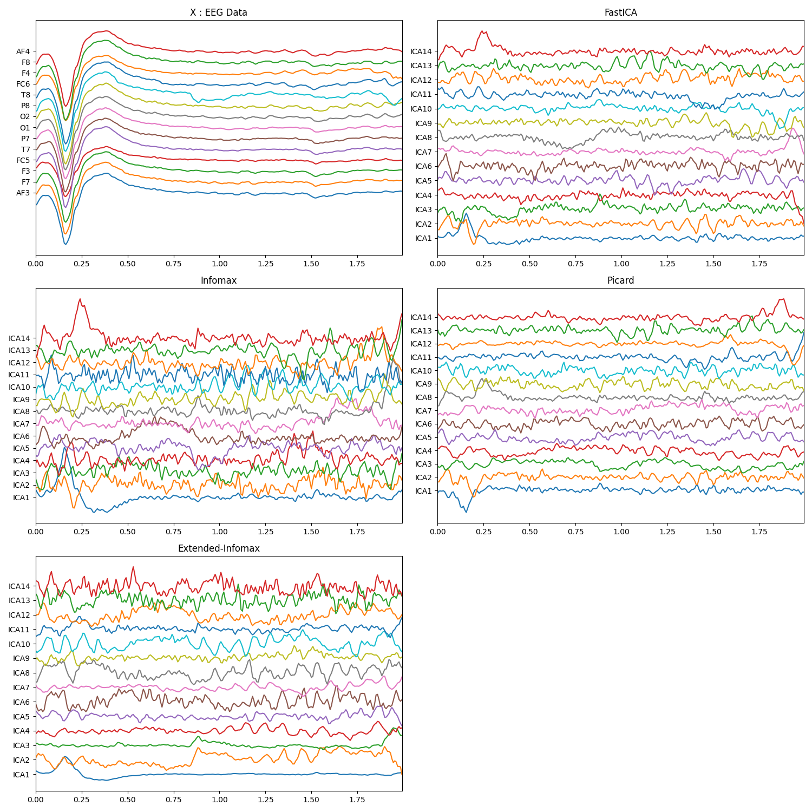

Note
Go to the end to download the full example code or to run this example in your browser via JupyterLite or Binder
Independed Principle Component analysis¶
Using InfoMax, Extended InfoMax, FastICA, & Picard
import numpy as np
import matplotlib.pyplot as plt
from spkit import ICA
from spkit.data import load_data
import spkit as sp
print('spkit version :', sp.__version__)
spkit version : 0.0.9.7
Load sample EEG Data ( 16 sec, 128 smapling rate, 14 channel) Filter signal (with IIR highpass 1Hz)
X,ch_names = load_data.eegSample()
Xf = sp.filter_X(X,band=[0.5],btype='highpass',verbose=0)
print(Xf.shape)
/Users/nikeshbajaj/Library/CloudStorage/OneDrive-QueenMary,UniversityofLondon/Github/GIT3/Dev/SPKIT_Dev/SPKIT_DOC_7/examples/signal_processing/plot_sp_ICA_eeg_example.py:22: DeprecationWarning: function eegSample will be deprecated in future version, due to naming convension, please use 'eeg_sample_14ch' for updated/improved functionality [spkit-0.0.9.7].
/Users/nikeshbajaj/anaconda3/envs/SPHX/lib/python3.10/site-packages/scipy/signal/_filter_design.py:2899: DeprecationWarning: Conversion of an array with ndim > 0 to a scalar is deprecated, and will error in future. Ensure you extract a single element from your array before performing this operation. (Deprecated NumPy 1.25.)
(2048, 14)
Applying ICA
methods = ('fastica', 'infomax', 'extended-infomax', 'picard')
icap = ['ICA'+str(i) for i in range(1,15)]
x = Xf[128*10:128*12,:]
t = np.arange(x.shape[0])/128.0
myICA = ICA(n_components=14,method='fastica')
myICA.fit(x.T)
s1 = myICA.transform(x.T)
myICA = ICA(n_components=14,method='infomax')
myICA.fit(x.T)
s2 = myICA.transform(x.T)
myICA = ICA(n_components=14,method='picard')
myICA.fit(x.T)
s3 = myICA.transform(x.T)
myICA = ICA(n_components=14,method='extended-infomax')
myICA.fit(x.T)
s4 = myICA.transform(x.T)
plt.figure(figsize=(15,15))
plt.subplot(321)
plt.plot(t,x+np.arange(-7,7)*200)
plt.xlim([t[0],t[-1]])
plt.yticks(np.arange(-7,7)*200,ch_names)
plt.title('X : EEG Data')
plt.subplot(322)
plt.plot(t,s1.T+np.arange(-7,7)*700)
plt.xlim([t[0],t[-1]])
plt.yticks(np.arange(-7,7)*700,icap)
plt.title('FastICA')
plt.subplot(323)
plt.plot(t,s2.T+np.arange(-7,7)*700)
plt.xlim([t[0],t[-1]])
plt.yticks(np.arange(-7,7)*700,icap)
plt.title('Infomax')
plt.subplot(324)
plt.plot(t,s3.T+np.arange(-7,7)*700)
plt.xlim([t[0],t[-1]])
plt.yticks(np.arange(-7,7)*700,icap)
plt.title('Picard')
plt.subplot(325)
plt.plot(t,s4.T+np.arange(-7,7)*700)
plt.xlim([t[0],t[-1]])
plt.yticks(np.arange(-7,7)*700,icap)
plt.title('Extended-Infomax')
plt.tight_layout()
plt.show()
t = np.arange(Xf.shape[0])/128.0
plt.figure(figsize=(12,5))
plt.plot(t,Xf+np.arange(-7,7)*200)
plt.xlim([t[0],t[-1]])
plt.xlabel('time(sec)')
plt.yticks(np.arange(-7,7)*200,ch_names)
plt.show()
- 
Decomposition and Construction matrices (Extended InfoMax)
# $$ S = A\cdot (X-\mu)$$
# $$ X = W\cdot S + \mu$$
# where $\mu$ is mean, computed before applying PCA
mu = myICA.pca_mean_[:, None]
W = myICA.get_sMatrix()
A = myICA.get_tMatrix()
s1 = np.dot(A,(x.T-mu))
x1 = np.dot(W,s4)+mu
plt.figure(figsize=(15,5))
plt.subplot(121)
plt.plot(x1.T+np.arange(-7,7)*400)
plt.yticks(np.arange(-7,7)*400,ch_names)
plt.title('Reconstructed X')
plt.subplot(122)
plt.plot(s1.T+np.arange(-7,7)*400)
plt.title('Computed ICA Ex-InfoMax')
plt.yticks(np.arange(-7,7)*400,icap)
plt.show()
print('Error X',np.sum(x1-x.T))
print('Error S',np.sum(s1-s4))
Error X 5.85667486729946e-11
Error S -4.366380174092299e-11
Total running time of the script: (0 minutes 1.046 seconds)
Related examples